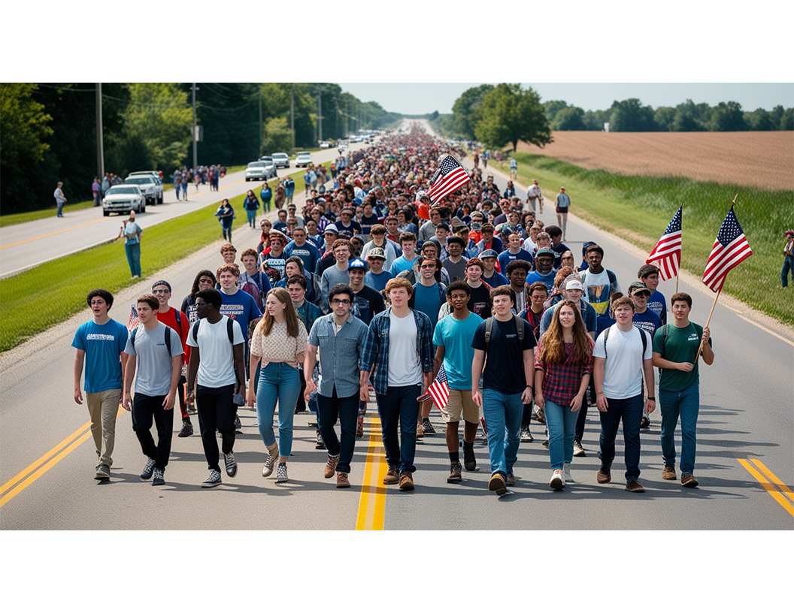

About the Unity Coalition
The Unity Coalition is a direct response to a 60-year unraveling of America’s civic core. This effort is led by Founder C. Patrick Clerkin who, through extensive travels and personal experiences, recognized the need for a unifying platform that bridges divides.
(You can insert more text from your own about section or the “informational essay” here.)
Meet the Founder

Charles “Patrick” Clerkin is a Boston-area native with a background in mechanical engineering, fraternity leadership, and political engagement. He has traveled extensively throughout middle America, building bridges with a wide range of communities. Patrick ran for City Council on a moderate, independent platform, and later set up a local civic hub on Mighty Networks. His passion for reconciling diverse viewpoints has culminated in the establishment of the Unity Coalition.
(Feel free to add more details about Patrick’s journey, podcasting, campaign experiences, etc. as provided in your earlier text.)